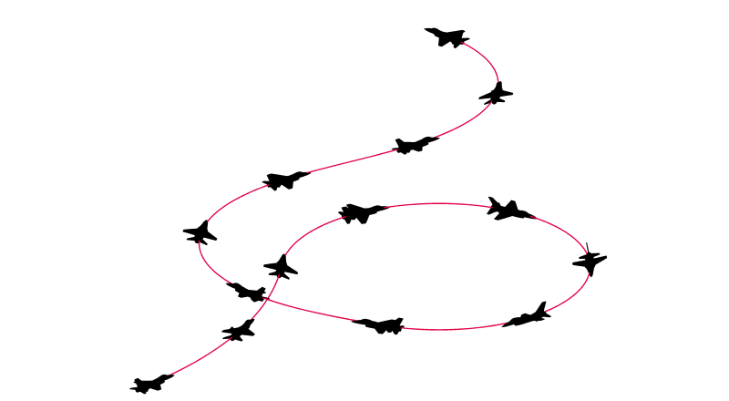

flypath3d使用方法简介
做科研的小伙伴们在使用matlab绘制飞行器轨迹时，总是感叹大牛绘制的图美观大方，而自己绘制的图则简陋到了极点。但现在有了flypath3d，导师再也不用担心我的绘图了。

flypath3d简介
flypath3d打包了一个免费的Matlab软件，用于导弹和空中目标轨迹的3D可视化，为计算机仿真提供了可视参考。 由于其多功能性和易用性，该软件可以帮助产生有吸引力的演示文稿，以用于各种科学或公共宣传目的。该软件可免费用于科学和教育用途。 您也可以出于任何目的修改和/或分发此软件。 但是，使用包装时，请记住引用该论文。
flypath3d安装
该包由使用“ package_setup”命令安装在Matlab环境中的几个M代码文件组成。 它提供了通过放置连续的对象来构造复杂的3D场景的功能，这些对象实际上在布局中起到了构建块的作用。
下载flypath3d软件包并将其解压缩到目标目录。 接下来执行配置脚本：
1 | package_setup |
这样，flypath3d就安装好了，可以开始使用它了。
参考链接
- flypath3d,by Witold Bużantowicz.